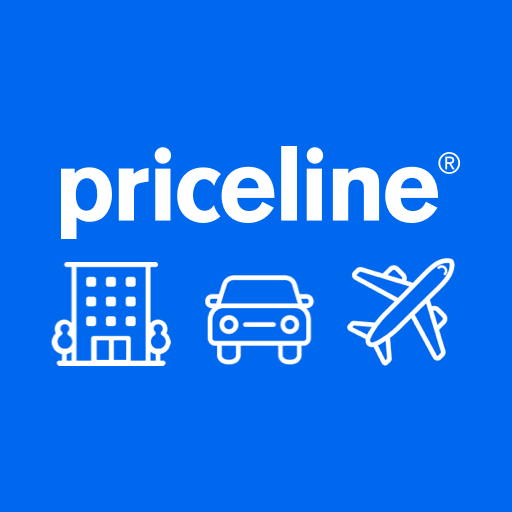
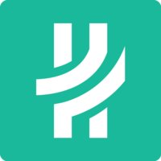

Hi, I'm Rachel.
Senior Software Engineer, Developer Experience @ Priceline
A little about me
I am on the Developer Experience platform team at Priceline focusing on web frontend and client architecture strategy. My work spans web monorepo migrations, design system adoption, and AI-assisted development, so product teams spend less time maintaining infrastructure and more time on innovative product work. I draw on my experience building high-traffic, customer-facing booking flows from search to checkout on product teams.
Platform Strategy
Web monorepo, design system, and a unified client data layer for the whole org
AI-Powered Velocity
Scaling developer speed with modern AI tooling
Product Engineering Focus
Engineering the product details that drive accessibility and conversion
Featured Initiatives
Design System Strategy
- Shaped the migration strategy with design and engineering partners, giving every web app one shared path to React 19
- Earned endorsement from design and engineering committees as the standard for frontend modernization, so teams can adopt it with confidence
- Paired it with a brand refresh for a consistent experience across pages, and moved styling to build time for faster page loads
Scaling AI Tooling
- Built custom Model Context Protocol (MCP) servers and AI agent skills integrated with design, component, and browser tooling (Figma, Storybook, Chrome DevTools), so AI assistants can audit and refactor code within developers' daily workflow
- Rolled out across the monorepo, then worked with app teams to extend it to standalone customer-facing web apps outside it, so the benefit isn't limited to one codebase
- Ran workshops with developers across portfolios, working through adoption hands-on so teams actually use the tooling
- Shared the approach org-wide at a company development showcase, spreading the practice beyond the teams directly involved
Visual Quality at Scale
- Worked with teams to make visual testing part of everyday delivery, growing visual regression coverage (Chromatic) ~4x so UI regressions are caught in review rather than production
- Built a shared setup with teams so anyone can add automated visual review to their PRs without configuring it from scratch
- Supported developers across portfolios as monthly design system delivery more than doubled, keeping quality checks in step with the pace
Web Monorepo Migration
- Led drafting of the migration playbook with the Developer Experience team, cutting a migration from weeks to days and making future migrations repeatable
- Shaped the adoption strategy and roadmap with partner teams, from an architecture decision record to an enterprise-endorsed standard, and planned future migrations alongside Product leadership so adoption is a shared plan
- Took the initiative to cut flaky web monorepo CI failures by ~30%, tracing a recurring esbuild deadlock to apps still on the classic Remix compiler, partnering with app teams on fixes, and following up to confirm the results, so engineers spend less time rerunning builds
Skills
Frontend Architecture
Design Systems & Styling
AI Tooling
Infrastructure & Cloud
Leadership & Communication
Writing
-
Server-side Rendering & Hydration
Tracking down hydration mismatches (server and client markup disagreeing) in production React apps, and the fixes that cut error rates by ~80%.
-
Backing Services for 12-Factor Apps
Setting up backing services so teams could switch sandbox, on-prem, and cloud environments via configuration.
-
Developing the Hydro Mobile App
Behind the scenes of building a blockchain-based two-factor authentication app in React Native.
-
Authenticating on the Blockchain with web3.js
A code walkthrough of authenticating users against a smart contract with web3.js.
Portfolio

Lead Developer Experience platform work: shared tooling, migrations, and standards that move web teams onto common infrastructure, so product engineers spend less time maintaining it and more time building product.
Hackathon Grand Prize, 2020
Won Grand Prize out of 19 teams, in collaboration with Alvin Tang, for an interactive mapping feature that visualizes customer trip itineraries with real-time route optimization.
- Shaped the design system migration strategy with design and engineering partners, giving every web app one committee-endorsed path to React 19, so teams modernize on a shared plan and stay on supported dependencies
- Grew automated visual regression testing ~4x with a shared setup any team can add to its pull requests, catching UI regressions before release as monthly design system contributions more than doubled
- Scaled AI-assisted development through hands-on workshops on agent skills and MCP tooling, working with app teams to extend it to standalone customer-facing web apps outside the monorepo, so developers use AI assistants on real work across codebases
- Cut a monorepo migration from weeks to days with a playbook now used for every migration, bringing more apps onto shared tooling faster, and shaped the adoption strategy and roadmap with partner teams
- Took the initiative to cut flaky web monorepo CI failures by ~30%: traced a recurring esbuild deadlock to apps still on the classic Remix compiler, partnered with app teams on fixes, and followed up on the results, so engineers spend less time rerunning builds
- Put a high-traffic hotel details page, a key step before booking, on a modern, maintained foundation by moving it from a legacy React app onto the Next.js framework, building its routing, typed GraphQL data layer, analytics tracking, and design system migration
- Helped teams through a site-wide brand refresh by integrating the new design system carousel into marketing pages, hotel, flight, car, and package listings, and filter chips, giving customers a consistent experience across the site
- Helped the marketing team trace intermittent font and layout glitches on marketing pages to a React hydration mismatch (server and client HTML disagreeing) uncovered by the design system migration, and worked through a fix plan with them that addressed the root cause instead of patching symptoms
- Invested in the team's growth by onboarding and mentoring engineers, from co-op students to junior and mid-level engineers, helping them ramp up quickly and grow their careers, and interviewed engineering and engineering manager candidates to help build strong teams
- Led the fix for production React hydration errors (server and client rendering out of sync) across customer-facing apps, cutting error rates by ~80% and initial load time by ~15%, and ending recurring PagerDuty alerts that had been waking up on-call engineers. Read the write-up
- Set up 12-factor backing services (a cloud-ready app methodology where databases and APIs are swappable resources configured through environment variables) during an on-prem to cloud migration, letting teams switch between sandbox, on-prem, and cloud environments by changing configuration. Read the write-up
See year-by-year details
Developer Experience Platform · Accommodations
- Shaped the company's design system migration strategy with design and engineering partners, giving every web app one endorsed path to React 19, so teams modernize on a shared plan and stay on supported dependencies
- Grew automated visual regression testing ~4x by giving teams a shared setup, catching UI regressions before release as design system contributions more than doubled each month
- Scaled AI-assisted development across the company through hands-on workshops on agent skills and MCP tooling, extended to standalone customer-facing web apps outside the monorepo, so developers use AI assistants on real work across codebases
- Led drafting of a migration playbook that cut a monorepo migration from weeks to days, bringing more apps onto shared tooling faster, and shaped the adoption strategy and roadmap with partner teams
- Took the initiative to cut flaky web monorepo CI failures by ~30%, tracing a recurring esbuild deadlock to apps still on the classic Remix compiler, partnering with app teams on fixes, and following up to confirm the results, so engineers spend less time rerunning builds
- Put a high-traffic hotel details page, a key step before booking, on a modern, maintained foundation by moving it from a legacy React app onto the Next.js framework, building its routing, typed GraphQL data layer, analytics tracking, and design system migration
- Helped teams through a site-wide brand refresh by integrating the new design system carousel across marketing pages, hotel, flight, car, and package listings, and filter chips, giving customers a consistent experience across the site
- Traced intermittent font and layout glitches on marketing pages to a React hydration mismatch uncovered by the design system migration, and worked with the marketing team on a fix plan that addressed the root cause
- Kept the TypeScript monorepo unblocked through disciplined CI and test ownership, so every team sharing it could keep shipping
- Partnered with teams to add GitHub Actions and Slack notifications that sped up pull request reviews across the web monorepo
- Invested in the team's growth by onboarding and mentoring engineers, from co-op students to junior and mid-level engineers, to support their career growth, and interviewed engineering and engineering manager candidates to help build strong teams
Accommodations · Mobility
- Built React components with Tailwind CSS, Base UI, Vaul, and Embla for a new design system used by product teams across the company, giving teams consistent, ready-made building blocks, including a Carousel adopted across dozens of pages
- Guided web apps off runtime styled-components onto build-time Tailwind CSS and the new design system for faster page loads
- Shipped time-sensitive hotel promotions and filters (Cyber Monday and seasonal deals) in partnership with marketing, so campaigns launched on time for peak shopping periods
- Cut the rental car landing page's Largest Contentful Paint (LCP, how quickly the main content appears) by ~2 seconds with CDN-hosted assets and eager-loaded hero imagery
Mobility
- Led the fix for React hydration errors (server and client rendering out of sync) in the rental car apps, cutting error rates by ~80% and initial load time by ~15%, and ending overnight PagerDuty alerts that had been waking up on-call engineers
- Led a multi-quarter launch of an alternative rental car supplier, defining MVP requirements and the engineering backlog and driving discussions with stakeholders, giving customers more rental options
- Upgraded web apps to React 18, working through Webpack, Loadable Components, static vs streaming server-side rendering, styled-components, and Babel, keeping the apps on a supported React version
- Designed the technical roadmap for moving client-side business logic to GraphQL, setting guidelines together with the team, so business rules live in a shared API layer instead of each client
- Automated QA deploys with GitHub Actions, saving 0.5 to 1 hour of manual work per change, and improved the Slack workflow so engineers can notify against a chosen base branch
- Improved the map experience with a link per pickup location that highlights and scrolls to the selected rate, so customers can compare locations faster
- Supported the Google Analytics 3 to 4 migration with the analytics team for better tracking of customer behavior
- Improved server error handling so users see informative messages and can retry their search instead of hitting a dead end
- Advocated a shared vehicle listings card in the monorepo, bringing consistency across rental car flows (cross-sell, upsell, checkout, white label, packages) and avoiding duplicate implementations
- Partnered with a cross-functional performance group on improvement plans: dependency alignment, tree shaking, SSR workarounds, GraphQL edge caching, and Lighthouse audits, so performance work was coordinated across teams
- Built a GenAI-powered trip recommendation quiz with a team of 5 at the company hackathon, exploring how AI could personalize trip planning
Mobility
- Shipped a checkout upsell that lets customers upgrade their rental car, a multi-quarter project, at a 4.6% conversion rate, from the data sequence diagram through implementation
- Refined frontend scope and requirements with partner teams for a multi-quarter project showing full rental car listings inside travel package search, launching with a 90% A/B test win probability, so rental cars reached customers already shopping for packages
- Onboarded and mentored co-op students and junior-to-mid-level engineers, supporting their career growth and ramping one junior engineer through their first 90 days to contribute across 3+ codebases and beat the expected add-on purchase rate by ~10% on special equipment pricing in checkout
- Created utility functions that convert the old data format into the new search and checkout schemas, so both launches could reuse existing data
- Wrote a checkout reference guide to help engineers through the migration from a legacy cart to a new universal checkout, cutting ramp-up time
- Interviewed candidates for the co-op student program, helping build the company's early-career engineering pipeline
Mobility
- Partnered with the iOS team as the web point of contact for their migration from REST APIs to GraphQL, keeping web and iOS behavior aligned
- Led the Fullstory rollout (a digital experience analytics platform that captures how customers interact with the site) across frontend apps, masking every element containing personally identifiable information (PII) so recorded sessions protect customer privacy
- Fixed point-of-sale pricing bugs by investigating Stackdriver logs and updating the shared request-handler library in the monorepo, so customers saw accurate prices for their region
- Developed some of the most used search filters (Deals, Save Your Budget, Price, and Shuttle) and introduced an "edit search" modal on mobile, helping customers narrow results faster
- Improved accessibility by updating meta viewport tags and adding aria-labels, letting users zoom and screen readers describe controls
Mobility
- Migrated frontend apps from static to streaming server-side rendering for faster time to first byte
- Advocated 12-factor app goals (a methodology for portable, cloud-ready apps) during the on-prem to cloud migration by setting up backing services with environment variables, so teams could test in sandbox, on-prem, and cloud environments by switching configuration
- Solved memory leaks that caused Kubernetes pod restarts by investigating Splunk and New Relic garbage collection logs and updating Docker configuration, stopping PagerDuty alerts for the team
- Suggested lazy loading to speed up mobile filters and "load more", reducing time to visually complete
- Added a reusable promotions GraphQL operation shared across products, so teams didn't each rebuild the same logic
- Investigated marketing pixel behavior across pages to decide whether they should fire on every user interaction, avoiding inflated analytics and unnecessary page work
Mobility
- Introduced Cypress end-to-end testing with environment configurations and example specs, laying groundwork for cross-browser and A/B testing so key flows were checked automatically (replaced by Mabl in 2024)
- Won the hackathon Grand Prize with Alvin Tang for a rental car trip route visualization, then met with the Chief Product Officer to discuss shipping it to production (see above)
- Fixed the rental car map view so counter locations show correctly and the map fits the customer's screen, so customers could reliably find their pickup counter
- Built merchandising and promotion banners from business requests and fixed carousel navigation arrows, supporting marketing campaigns
- Implemented deep links from the homepage typeahead to rental counter locations, so customers can jump straight to a location from search
Mobility
- Advocated WebP delivery with Fastly configuration at the edge for efficient compression and faster image loading
- Migrated the rental car landing page to TypeScript for type safety, updating Webpack, Jest, TypeScript, and Babel configurations, so type errors are caught at compile time
- Investigated a drop in mobile homepage ad impressions and worked with the marketing team to reload new tag manager rules, getting impressions tracking correctly again
- Fixed a point-of-sale issue where deep-link users saw an international display on domestic searches, so customers see the right regional experience
- Refactored the "Car Type" filter to show or hide types by size and category, making it easier for customers to find the right car
- Aligned date formats across international and translated pages in listings and checkout for a consistent experience across regions
Earlier Roles
Core team member building Hydro, a blockchain-based two-factor authentication and identity app on Ethereum that shipped on iOS and Android.
- Shipped a blockchain-based two-factor authentication app (React Native) to iOS and Android, where each login signs a transaction on Ethereum's immutable ledger, giving websites a tamper-resistant way to verify identity. Read how we built it
- Built and documented sample decentralized app login flows that verify identity through a smart contract using web3.js, giving integrating developers a working reference to follow. Read the technical deep dive
- Presented sales demos and built proof-of-concept prototypes with clients and partners in workshops, letting prospective clients see the platform working before committing

Joined as employee #7 at a seed-stage wealth management startup, reporting to the CTO as the team grew past 30, and later spun off into Hydrogen.
- Scaffolded a single-page app on Angular2 and Node/Express to replace a legacy PHP multi-page platform, giving the new investing platform a modern, maintainable foundation
- Built interactive client portfolio visualizations with D3.js and C3.js, helping clients understand their investments at a glance
- Implemented session management with Redis and built the user interfaces for the two-factor authentication app, keeping client accounts secure
Built the alpha product for an arts-network startup, working with a globally distributed team and reporting directly to the CEO.
- Built the web platform end-to-end, from the Angular1 frontend to the Node backend, alongside a globally distributed team of engineers and designers
- Deployed and iterated quickly on Heroku, taking the alpha product from idea to launch with a lightweight release process